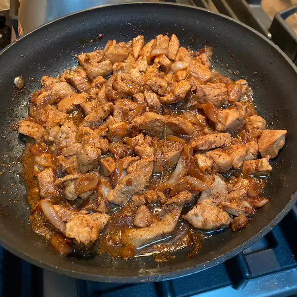

Adobo

Famous Chicken Adobo
Classic chicken adobo recipe that's simple to make and loved by all who try it.
It has been modified to be a bit saucier than traditional adobo and is delicious served over rice.
Ingredients
- 2 tablespoons vegetable oil
- 1 (3 pound) chicken, cut into pieces
- 1 large onion, quartered and sliced
- 2 tablespoons minced garlic
- ⅔ cup low sodium soy sauce
- ⅓ cup white vinegar
- 1 tablespoon garlic powder
- 2 teaspoons black pepper
- 1 bay leaf